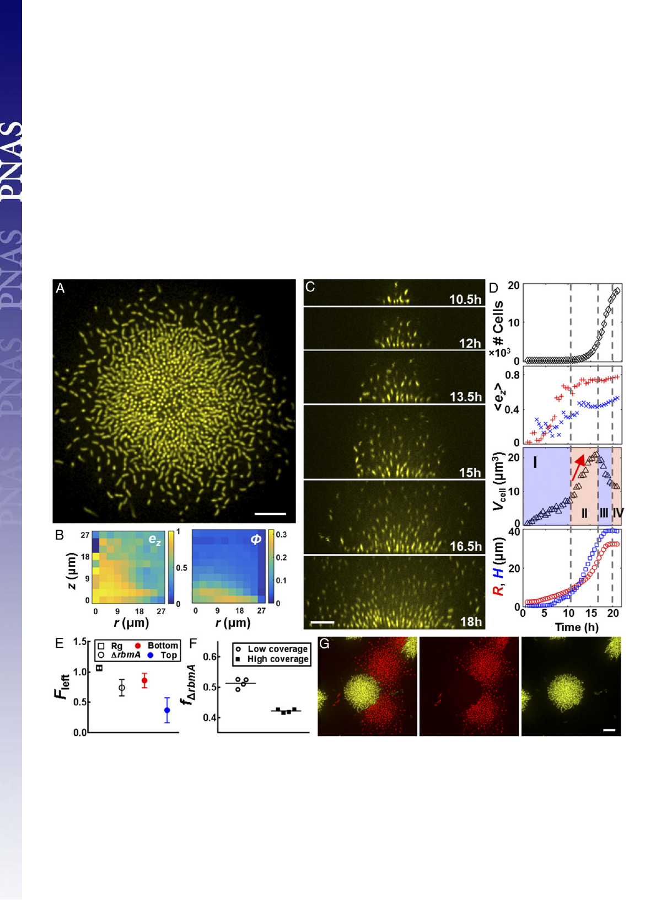

responsible for cell-to-surface adhesion. Single mutants of Δbap1
and ΔrbmC exhibit the same biofilm development pattern as the
parent (Fig. S3), consistent with the partially redundant roles of
Bap1 and RbmC in mediating cell-to-surface adhesion (17) (Fig.
S4). Clusters of the double Δbap1ΔrbmC mutant, however, adopt
roughly spherical shapes and float above the surface (Fig. 2E and
Movie S6), consistent with surface attachment being eliminated. A
remarkable feature of the Δbap1ΔrbmC double-mutant biofilm is
that it has also completely lost cell ordering (Fig. 2F): No vertically
or radially ordered region can be identified. Indeed, neighboring
cell orientation is uncorrelated, even though cells remain connected
to one another by RbmA (Fig. S4). The disorder is not simply
caused by a reduction in biofilm density: Fig. 2G shows that for the
parent strain, higher local volume fraction is correlated with a
stronger local alignment, whereas this trend is abolished in the
Δbap1ΔrbmC double mutant. Coating the surface with exogenous
Bap1 and/or RbmC restores cell-to-surface attachment to the
Δbap1ΔrbmC biofilms, as well as partially restoring cell or-
dering (Fig. 2H and Fig. S5). Therefore, we conclude that the
nematic cell ordering inside biofilms is also a surface-associated
phenomenon, likely caused by the same growth-induced surface
compression that continuously realigns and packs cells in the
vertical direction.
Cell-to-Cell Adhesion Controls the Biofilm Growth Mode. We next
investigated the role of cell-to-cell adhesion, mediated by the
matrix protein RbmA (17, 30, 31), in shaping biofilm architec-
ture. Fig. 3A shows a representative image of the bottom layer of
a ΔrbmA mutant biofilm cluster, showing much larger cell-to-cell
distances than in the parent. The most striking difference in
overall biofilm morphology relative to the parent strain is the
much reduced cell density in the structure at increasing distance
Fig. 3. Deletion of RbmA causes biofilm expansion driven by matrix production. (A) Cross-sectional image of the bottom layer of a biofilm cluster of ΔrbmA
cells at 18 h. (B) Corresponding spatial distribution of ez and ϕ. (C) Side view of formation of the ΔrbmA biofilm cluster at indicated times. (D) Time evolution
of cell number, hezi, Vcell, R, and H for the ΔrbmA biofilm cluster shown in C and D. Color and symbol designations follow Fig. 1. Vcell shows an additional
phase in which Vcell increases sharply (red arrow), characterizing the expansion mode driven by the matrix. (E) Fraction of cells remaining following me-
chanical perturbation (Fleft) for the Rg parent biofilm (□) and the ΔrbmA biofilm (○) averaged over four biological replicates (error bars correspond to SDs).
For ΔrbmA biofilms, we characterize Fleft for the bottom 75% (red) and top 25% (blue) biofilm biomasses, respectively. (F) Final fraction of the ΔrbmA mutant
remaining (fΔrbmA) starting from a 1:1 mixture of the Rg parent strain and the ΔrbmA mutant at the surface with low surface coverage (○) and high surface
coverage (■). (G) Representative contact configuration between an Rg biofilm cluster (yellow) and a ΔrbmA mutant cluster (red), shown with two channels
combined (Left) and separated (Center and Right). (Scale bars: A, C, and G, 10 μm.)
Yan et al.